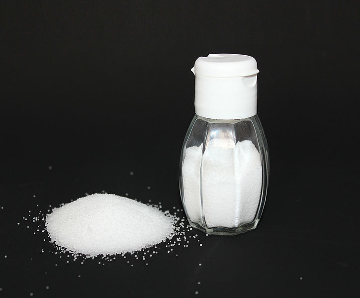

|  |
Mi is az a só?A konyhasó (vagy legfőbb összetevőjének kémiai neve után nátrium-klorid, melynek képlete: NaCl) az egyik legismertebb só a Földön. Leggyakoribb felhasználása a tartósítás és az ételízesítés, a köznyelvben egyszerűen csak só. Felhasználása, jelentőségeA konyhasó az egyetlen ásványi eredetű ízesítő anyag, amelyet, mint fűszert, nem csak az ételek ízesítéséhez, hanem azok tartósításához is használunk. A só életszükséglet. A sóhiány szédülést, izomgyengeséget, görcsöket okozhat, de kritikusabb helyzetben apátiához, halálhoz vezethet. Szervezetünknek napi 5-10 g sóra van szüksége, de ez is egyénenként változó lehet. Az étkezések során 20-25 g sót fogyasztunk, ez a mennyiség viszont már nem ajánlott. |